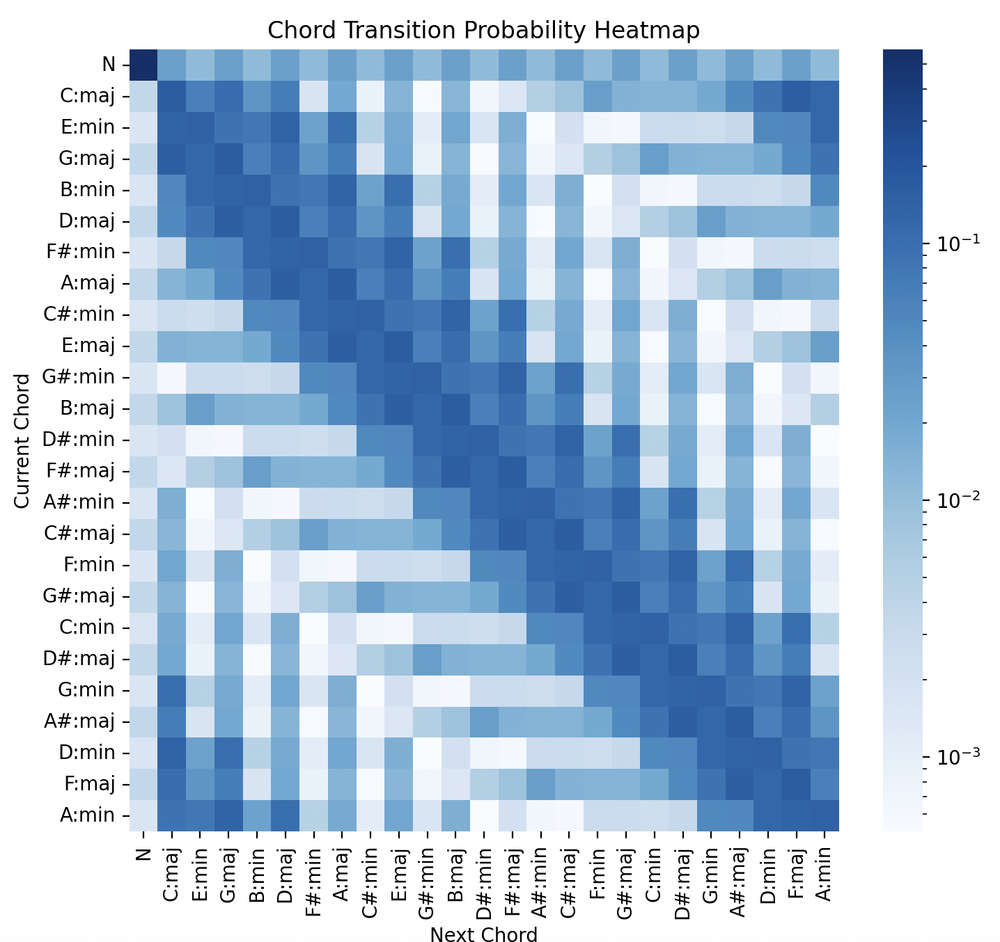
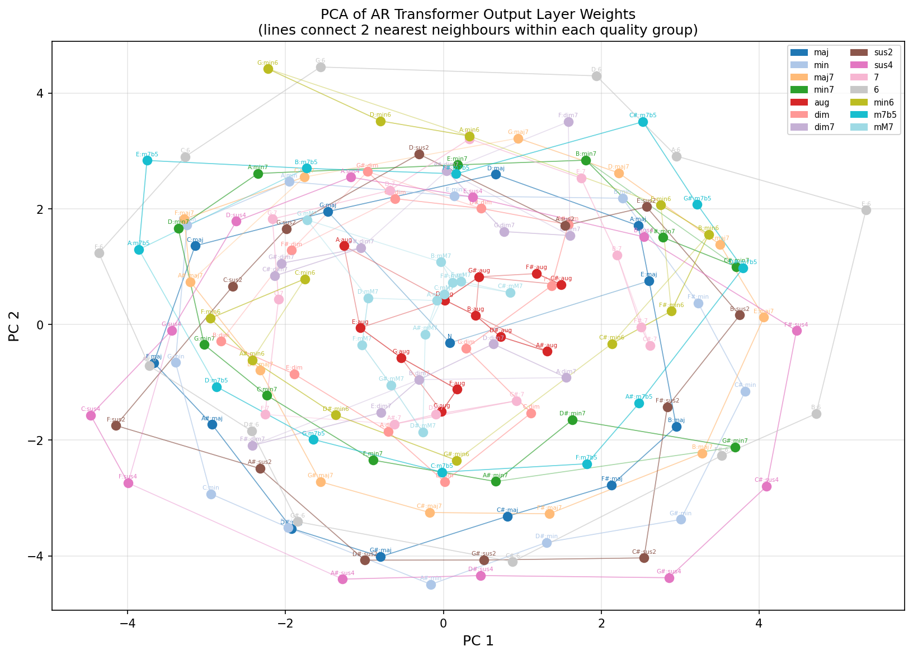
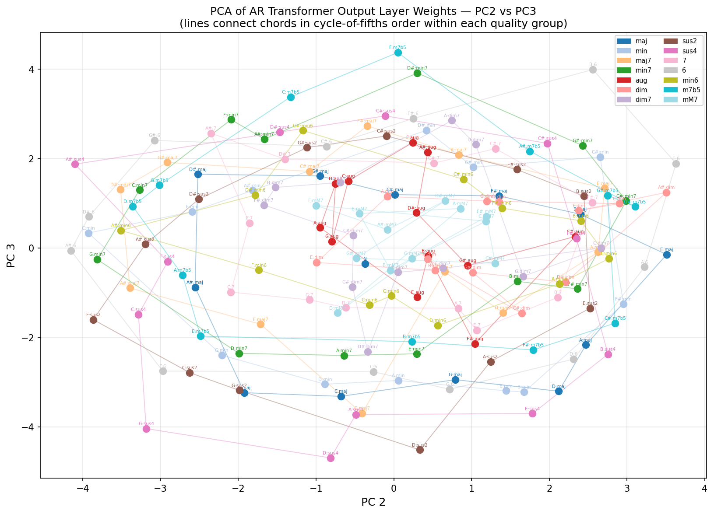
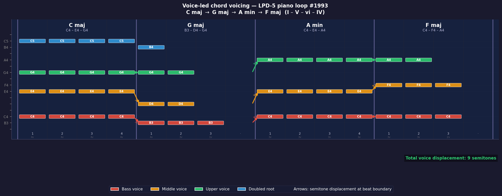

Stage 2 · Model 1 · Results
CRF Results



0:40
Part IIB Project · University of Cambridge
A three stage real time pipeline that listens, infers harmony, and generates a full band accompaniment.
Agenda
Motivation
Current systems are not adaptive or end-to-end.
System Overview
Stage 1
| Metric | Mean |
|---|---|
| Voicing F measure | 0.978 |
| Raw Pitch Accuracy | 0.517 |
| Raw Chroma Accuracy | 0.562 |
| Octave Error Rate | 0.046 |
| PC Histogram Cosine | 0.977 |
Stage 2
The joint probability of the full chord sequence given the melody. What we ultimately want to maximise.
The per-step prediction. Chord at beat t given all melody and prior chords. Models this directly.
Stage 2 · Model 1
Stage 2 · Model 1 · Results
| Metric | Train | Test |
|---|---|---|
| Top 1 Accuracy | 28.23% | 25.56% |
| Norm Cycle of Fifths Dist | 0.825 | 0.849 |

Stage 2 · Model 2
Stage 2 · Model 2 · Results
| Metric | Train | Test |
|---|---|---|
| Top 1 Accuracy | 27.36% | 15.50% |
| Norm Emb Distance | 0.509 | 0.763 |

Stage 2 · Model 2 · Key Finding


Stage 2 · Interpretability


Stage 3


End-to-End Latency

Further Research